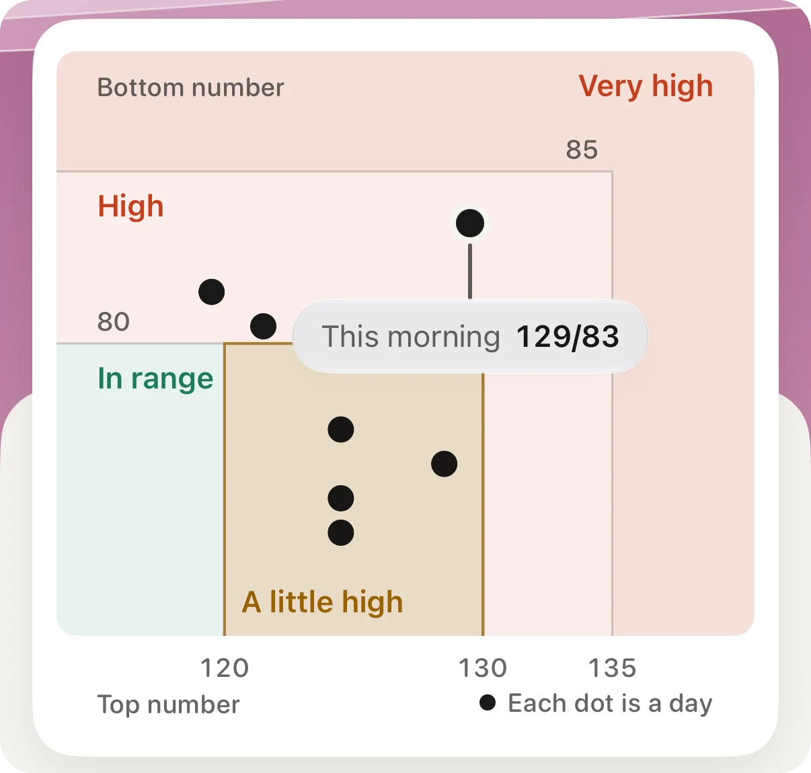
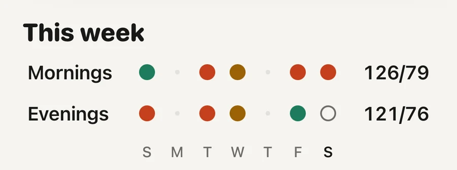

Problem · Heart

Treat it as a reason to measure, not as a diagnosis. The watch does not measure blood pressure. It looks for a pattern in 30 days of heart sensor data, and when it finds one, Apple asks you to check with an upper-arm cuff twice a day for seven days and to talk to a doctor. The week's average from the cuff is the number that counts.
Apple Watch has no cuff, so it cannot take a blood pressure reading. Hypertension notifications use the optical heart sensor on the back of the watch, the same one that reads your pulse. The feature looks at how your blood vessels respond to each heartbeat, gathers that in the background over 30-day periods, and sends a notification if the pattern points to high blood pressure (FDA, 2025).
So the notification carries no numbers. It does not say 150 over 95. It says that your last month of data looks like the data of people who have hypertension, and that it is worth checking properly.
The check matters because high blood pressure is usually silent. Worldwide, about half of the men and four in ten of the women who have it have never been told (NCD Risk Factor Collaboration, 2021).
Less sensitive than most people expect. In the study behind the American clearance, 2,229 people were enrolled to wear the watch for 30 days and measure with a home cuff alongside it, and 1,863 gave enough data. Of those who had high blood pressure, about 41 in 100 received a notification. Of those who did not, about 8 in 100 received one anyway (FDA, 2025).
Who was notified in the validation study
Two things follow. A notification is a hint strong enough to act on, but it can be wrong, and only cuff readings settle it. And the watch misses more than half of the people with high blood pressure, so a quiet watch tells you very little.
A notification is a hint. A quiet watch is not an all-clear.
The watch did better where the pressure was clearly high: among people with stage 2 hypertension, about 54 in 100 were notified (FDA, 2025).
The full routine, with the reasons behind each step, is in the guide on keeping a blood pressure log your doctor can use.
Then the notification was probably one of the false ones. In the study, about 8 in 100 people with normal blood pressure were notified anyway. Mention it at your next routine visit and show the week of readings. You do not need to keep measuring every day.
Two cautions. Home readings count only if the routine was right: a cuff that fits your arm, five quiet minutes, both readings kept. And if the watch notifies you again later, repeat the week. Blood pressure tends to rise with age, and a second hint deserves a second look.
It does not mean your blood pressure is fine. The watch missed about six in ten of the people with high blood pressure in the study, and Apple says plainly that the feature cannot find every case (Apple Support, 2026). Have your blood pressure measured at routine visits whatever your watch says.
The feature is also not meant for everyone. Apple says it is not for people under 22, not for use during pregnancy, and not for people who already have a diagnosis of hypertension. If you are being treated, your cuff and your doctor are the guide, not the watch.
On iPhone, open the Health app, tap your picture or initials at the top right, tap Health Checklist, then tap Set Up under Hypertension Notifications. Because the feature works over 30-day periods, expect nothing in the first month.
It runs on Apple Watch Series 9 or later and Apple Watch Ultra 2 or later, with watchOS 26 or later. Apple lists more than 150 countries and regions, among them the United States, the United Kingdom, Germany, Austria, Switzerland and Hungary. On the newest watch models a few regions are still waiting for clearance (Apple, feature availability, read November 2026).

Mornings beside eveningsEach dot is a morning or an evening with readings, and its colour is where it sits on the home lines. The two averages on the right are the first thing a doctor asks about.
Aera, for iPhone and Apple Watch
The notification itself is Apple's, and Aera has no part in it. Aera starts where the cuff readings arrive. It reads the readings your cuff saves to Apple Health, or the ones you type into the Health app. You do not type readings into Aera.
It averages your last seven days with readings and puts that average in one of four plain words on the home lines: In range, A little high, High or Very high. The word appears once you have readings on three days. Until then the screen says it is still learning. A sentence under the figure says which of the two numbers puts you there and whether your mornings or your evenings run higher.
For the visit, the report comes as a PDF, a spreadsheet or a QR code. A report of up to one month is free, which covers the seven days after a notification. There is no account.
Aera is not a medical device and does not diagnose. Only a doctor can tell you whether you have high blood pressure.
No. Apple Watch has no cuff and gives no blood pressure numbers. Its hypertension notifications look for a pattern in 30 days of heart sensor data and tell you to check with a cuff.
In the validation study, about 41 in 100 people with high blood pressure were notified, and about 8 in 100 people without it were notified anyway. A notification is a reason to measure, and no notification is not an all-clear.
Measure with a validated upper-arm cuff twice in the morning and twice in the evening for seven days, keep every reading, and take the average to a doctor. At home, an average of 135/85 or more counts as high in Europe.
Apple Watch Series 9 or later and Apple Watch Ultra 2 or later, with watchOS 26 or later, in the countries Apple lists. The feature is not for people under 22, during pregnancy, or with a hypertension diagnosis.
Related field notes: what a consumer watch cannot measure
Related guides: How do you keep a blood pressure log your doctor can use? · What is a normal resting heart rate? · What does a biological age from your watch mean?
 Or scan with your iPhone
Or scan with your iPhoneFree to start. No account. Works with the watch you already wear.